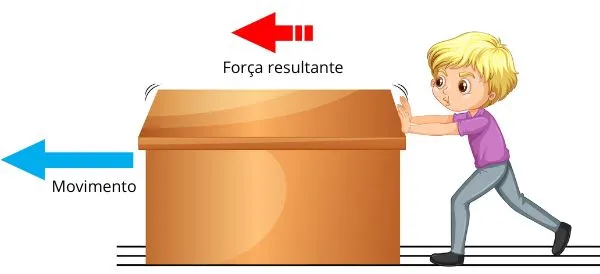

LEIS DE NEWTON
Certo dia caiu uma maçã na cabeça de Sir Isaac Newton que então, propôs a Lei da Gravidade, depois, o mesmo (Newton) além de propor várias teorias e ser um dos maiores físicos que já se teve na história e que contribuiu em todas as áreas de forma gigantesca, ele também propôs três leis que são fundamentais para a física e inclusive é um dos assuntos índispensaiveis para a vida acadêmica (GOUVEIA, 2023).
Figura 1: Isaac Newton
Fonte: GOUVEIA, 2023.
PRIMEIRA LEI DE NEWTON - LEI DA INÉRCIA
A primeira Lei de Newton é chamada de princípio da inércia, mas é mais conhecida como Lei da Inércia (HELERBROCK, 2023).
"Segundo Rafael Helerbrock (2023) a primeira lei de Newton, também conhecida como princípio da inércia, afirma que todo corpo permanece em seu estado de repouso ou em movimento retilíneo e uniforme caso as forças que atuem sobre ele se anulem."
A Lei da Inércia significa que: se algo está parado esse algo pretende ficar parado, até venha alguém mexer nele, exemplo, um celular, se for deixado no sofá, ele ficará lá até alguém venha a pega-lo, sem uma força exterior ele continuará parado, e o mesmo se aplica para corpos em movimento, mas para dar um exemplo precisa-se ir lá para o espaço, já que lá não tem ar nem gravidade para atrapalhar, agora o exemplo é, alguém esta lá no espaço e joga uma caneta para qualquer lado, essa caneta irá continuar para sempre viajando na velocidade que você jogou ela até que, uma força exterior atravesse o caminho dela (como um asteroide, ou a caneta entrar em órbita de um objeto grande, apesar da massa da caneta não ser suficiente para ela entrar em órbita, ao nao ser que seja de outro objeto pequeno) (HELERBROCK, 2023).
Figura 2: Analogia a Primeira Lei de Newton

Fonte: MARTINS, 2023.
SEGUNDA LEI DE NEWTON:
PRICÍPIO FUNDAMENTAL DA DINÂMICA
A segunda Lei de Newton é o Princípio Fundamental da Dinâmica, (HELERBROCK, 2023).
“ Segundo Pâmella Raphaella Melo (2023) a segunda lei de Newton determina que se aplicarmos força sobre um objeto, ela produzirá movimento, cuja aceleração é proporcional à sua massa."
Esta lei diz que se for aplicado uma força proporcionalmente a massa do corpo que se quer mover, e também que, a aceleração deste corpo será proporcional a massa (HELERBROCK, 2023).
Um exemplo assim: há duas bolas num campo de futebol, dispensando a grama, ar, e o resto, a ideia é que o atrito não deverá afetar no resultado. Tomando novamente as bolas, há uma bola de futebol do seu tamanho, mas com uma massa pequena, e ao lado dela tem uma bola de madeira de uma massa um pouco maior (HELERBROCK, 2023).
Pronto, agora vamos a prática, você começa a empurrar a bola de futebol, como ela é leve, você usa pouca força e também a aceleração dela não é muito alta, e se você soltá-la(sem dar impulso) ela não irá muito longe, mas agora vamos a de madeira, você começa a empurrá-la e percebe que precisa de mais força para tirá-la do repouso, mas como você vai para a academia você acaba conseguindo tirá-la do lugar e vai empurrando ela, e com alguns metros de você empurrando ela já pode-se perceber que ela vai aumentando sua velocidade, e de repente você solta ela(sem dar impulso), e então ela percorre muito mais que a bola de futebol (HELERBROCK, 2023). Resumindo é que você precisa fazer mais força para empurrar algo pesado, e pouca força para empurrar algo leve, e também que algo pesado acelera mais que algo leve (HELERBROCK, 2023).
Figura 3: Demonstração da Segunda Lei de Newton
Fonte: MELO, 2023.
TERCEIRA LEI DE NEWTON - LEI DE AÇÃO E REAÇÃO
“ Segundo Rafael Helerbrock (2023), a terceira lei de Newton, conhecida como lei da ação e reação, afirma que, para toda força de ação que é aplicada a um corpo, surge uma força de reação em um corpo diferente. Essa força de reação tem a mesma intensidade da força de ação e atua na mesma direção, mas com sentido oposto."
Ela quer dizer que se você aplica uma força a algo ele devolve de alguma forma, posso dar vários exemplos. O primeiro, se alguém chutar uma pedra e jogá-la longe, mas a pedra também vai “chutar de volta”, parece estranho, mas calma, ao menos que o alguém seja um robô ao chutar a pedra sente dor, e essa dor é a reação sobre a ação de chutar. Outro exemplo é quando se precisa empurrar algo pesado, uma geladeira pro caso, se alguém tentar empurrar ela, a geladeira “devolverá” ficando parada, a geladeira faz força pra ficar parada, a ação é empurrar, e a reação é ela fazer força pra ficar parada. É só pra deixar claro esses exemplos são figurados, mas funcionam, até porque pedras e geladeiras no mundo real são seres inanimados (HELERBROCK, 2023).
Figura 4: Demonstração da Terceira Lei de Newton-Lei

Fonte: HELERBROCK, 2023.
Refêrencias
GOUVEIA, ROSIMAR. "Isaac Newton". Toda Matéria. Disponível em: https://brasilescola.uol.com.br/fisica/segunda-lei-newton.htm. Acesso em 2 de julho de 2023.
HELERBROCK, Rafael. "Primeira Lei de Newton". Brasil Escola. Disponível em: https://brasilescola.uol.com.br/fisica/primeira-lei-newton.htm. Acesso em 15 de março de 2023.
HELERBROCK, Rafael. "Terceira lei de Newton". Brasil Escola. Disponível em: https://brasilescola.uol.com.br/fisica/terceira-lei-newton.htm. Acesso em 19 de março de 2023.
MARTINS, Fernando Henrique. "As Leis de Newton: os princípios da mecânica clássica". Curso Enem Gratuito. Disponível em: https://cursoenemgratuito.com.br/leis-de-newton-fisica-enem/. Acesso em 2 de julho de 2023.
MELO, Pâmella Raphaella. "Segunda lei de Newton". Brasil Escola. Disponível em: https://brasilescola.uol.com.br/fisica/segunda-lei-newton.htm. Acesso em 19 de março de 2023.